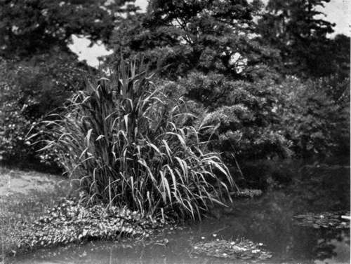
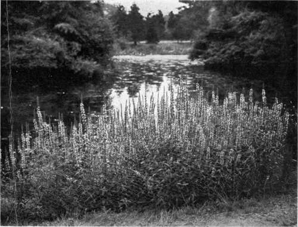
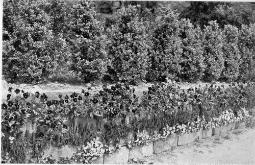
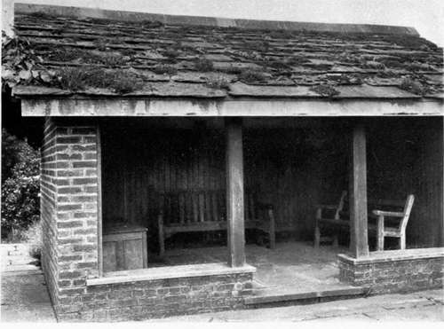
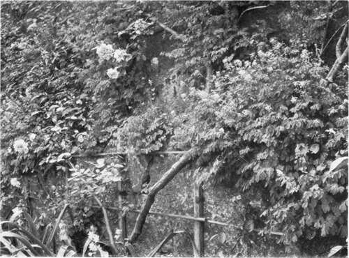
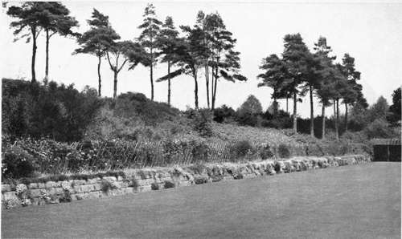

Peat Gardens. Continued
Description
This section is from the book "What England Can Teach Us About Gardening", by Wilhelm Miller. Also available from Amazon: What England Can Teach Us About Gardening.
Peat Gardens. Continued
Now let us make the circuit of this woodsy garden and enjoy a hundred flowers we have never seen before. The soil itself is a delight to walk upon, for it is a rich, spongy mass of reddish-brown peat, soft and cushiony to the foot. There are thousands of acres of such land in England made by the heather growth of untold centuries. And such soil is usually springy. Sir Henry was not content to leave this land all sopping and hummocky. The springs now feed a number of dainty little brooks, with clear water, pleasant gravelly bottoms, miniature water-falls, and even a little lake that is large enough for a few water-lilies. The sound of running water is charming in any garden, especially in the stillness of early morning, but in a peat garden it is doubly precious because it is a guarantee of health, as well as beauty.
Of course, peat and water make ideal conditions for members of the great heath family. Therefore, every one is tempted first to plant big masses of rhododendron hybrids, because they are the showiest and have the finest colours. Sir Henry Yorke has resisted this temptation, because it would have made his garden conventional. The hybrids he plants near his house because they are obviously the works of man. But in this sylvan retreat he chose to accentuate the native wildness. Therefore, he has planted the wild rhododendrons and the members of the heath family which do not suggest the garden. I mean such things as the flame azalea of the Carolina mountains; Azalea Vaseyi, perhaps the purest pink in the whole family; the mountain andromeda, marvellous for its sprays of creamy buds in midwinter; the Leucothoe, unrivalled for the arching grace of its branches laden with symmetrical rows of polished leaves; galax, a ground cover of incomparable beauty all winter, whether its leathery leaves be bronze or green; partridge-berry and wintergreen, which have beautiful red fruits that show all winter against the background of their evergreen leaves; the American cranberry which has the same attraction, plus bronzy colours in winter; and last, but not least, Shortia, a plant of romantic history and exquisite beauty. (Plate 101.)
Next to the heaths in interest come the hardy orchids. Most people have the idea that orchids are air plants and have to be grown in greenhouses. Yet there are fully a hundred species that we could grow outdoors in the North. Of the fifty-six that grow wild in the eastern United States, more than half can be bought from our own nurserymen. Thirty-two Japanese species are catalogued by one firm in New York and the Dutch bulb catalogues offer about three dozen European orchids. Of course, many of these are more curious than beautiful, but many of them are altogether lovely. The showiest hardy orchid in the world is our own Cypripedium spectabile, pictured on plate 33. Its pinkish moccasins are about two inches long. People often dig up the plants in the woods and move them to their gardens, where they do well for a few years and then die. Sentimentalists are sometimes said to be the worst vandals. They mean the best, but know the least. Barbarians do not destroy flowers, but sentimentalists dig up the rarest and most exquisite plants of damp, cool woods (on the plea of saving them) and move them to hot, sunny gardens, where, of course, they die. If these people were sincere they would put their money into peat gardens. For that is the only way of growing most of these treasures.
Another unique group suited only to the peat garden is composed of insect-destroying plants, such as the sundews and butterworts, the pitcher plants and Venus's fly-trap. Of course, you can grow them in greenhouses, where you can watch them capture and devour flies and other creatures, but it is a pity to forego their magical environment. These plants cannot be well grown without sphagnum moss. I was pleased to see our Northern pitcher plant (Sarracenia purpurea) in Sir Henry Yorke's bog garden, but he did not then have the showiest of the whole group of insectivorous plants, viz., Sarracenia flava. This is a native of the southern United States, yet Mr. Warren H. Manning once showed me some splendid colonies of it in his Massachusetts bog garden. The fly-trap is the most wonderful of all, for it claps its claws together and kills an insect before your very eyes. All these plants are now available from regular nurserymen, so that there is no excuse for robbing nature.
"But," you may exclaim, "I do not have any peaty soil or any sphagnum. What can I do?" Several things. If you want the finest kind of bog garden, do as Mr. Manning did — buy a sphagnum swamp, such as you can find in New England on wooded and hilly land suitable for summer homes, but costing only ten dollars to twenty dollars an acre. Or, buy a car load of peat, and sphagnum in any quantity you like, and make an artificial bog, taking for your guide Robinson's "English Flower Garden." If these methods are too costly, you can fall back upon the plants that can be grown in ordinary muck. By "muck" I mean soil in which you cannot see vegetable fibre as you do in peat. Let us see, then, if there are any showy plants that will grow in soil of any kind which is damp all the year or for a large part of it.
Showy? I should think so! In May you could have great clumps of Siberian iris bearing dozens of blue flowers four inches across; in June, the tall yellow iris with flowers five inches across; in early July, Japan iris in many colours, with flowers six to nine inches across; in late July, the purple cone-flower, with flowers five inches across; in August, Lilium superbum growing eight feet high and bearing thirty flowers, each four inches across; in August and September, the swamp rose mallow, Crimson Eye hibiscus and Mallow Marvels, with flowers five to eight inches across.
American wild rice (Zizania aquatica) beautifying and obscuring the water's edge; the little creeper at its foot is gunnera magellanica. iver heath. See pages 207-301.
This purple loose-strife {Lythrum Salicaria) looks very english, yet the plant grows wild in america. Sec page 81.
A LOW RETAINING WALL MADE AND PLANTED BY AN ORDINARY LABOURER. PANSIES ABOVE AND A HAREBELL BELOW, POSSIBLY Campanula Porlcnschlagiana{C. muralis). GRAVETYE, SUSSEX, HOME OF MR. WILLIAM ROBINSON. See page 88.
SHELTER HOUSE AT THE END OF THE BOWLING GREEN AT GRAVETYE. THE ROOF IS MADE OF STONE SLABS THAT HAD COVERED AN OLD BARN FOR 3OO YEARS. EARTH WAS PUT IN THE CREVICES; STONECROPS, HOUSELEEKS, AND OTHER FLOWERS WERE PLANTED BETWEEN, AND NOW SOW THEIR OWN SEED. See page 87.
THE YELLOW FUMITORY HAS FINELY CUT FOLIAGE, LIKE A DICENTRA. AND BEARS ITS YELLOW FLOWERS LITERALLY FROM SPRING TO FROST. IT SOWS ITS OWN SEED AND MULTIPLIES WITHOUT CARE (Corydalis lutea). GRAVETYE.
ONE SIDE OF THE BOWLING GREEN AT GRAVETYE, SHOWING A LOW RETAINING WALL, BUILT WITHOUT MORTAR AND DECORATED WITH ROCK-LOVING FLOWERS. ROSES ON THE TRELLIS, SCOTCH PINES ABOVE. THE PLANTS WERE PUT INTO THE CHINKS WITH EARTH BY THE WORKMEN. SKILLED LABOURERS WERE NOT REQUIRED. See page 88.
If this is not enough, you can have many flowers that are smaller individually, but equally showy in mass, e. g., the purple loosestrife (see plate 35), cardinal flower, bee balm, sneezeweed, swamp milkweed, turtle head, Chelone Lyoni, etc.
Some of these will do fairly well in ordinary gardens, but it is only in wet soil that they attain superb proportions and are splendid beyond words. For example, the purple loosestrife in the salt meadows grows only two or three feet high, and bears perhaps a dozen spikes. In the bog garden or by the water side, where it is released from the struggle for existence, it may grow six to ten feet high, forming gigantic clumps and bearing thousands of spikes, as at Barrytown, N. Y., and Holm Lea.
There is no book on peat gardening. In this chapter I can mention only the broadest features of this unique style. The materials for bog gardening are discussed in Chapter XXIII. For the construction, of bog gardens the best work I know is Chapter XXII of Robinson's "English Flower Garden." The best article I have seen in any American periodical is "The Two Kinds of Bog Garden," which Mr. Warren H. Manning wrote for Country Life in America for August, 1908. Plants for peat gardens are easy enough to get. There are half a dozen American nurserymen who catalogue fifty to a hundred species, and the European dealers, of course, offer a far greater variety. The big thing, however, is pictorial quality, and this depends not only on design but also on structure. And since the subject is so new, in America, at least, it behooves every one who can afford it to engage a competent landscape gardener.
Continue to:
Tags
garden, flowers, plants, England, effects, foliage, gardening